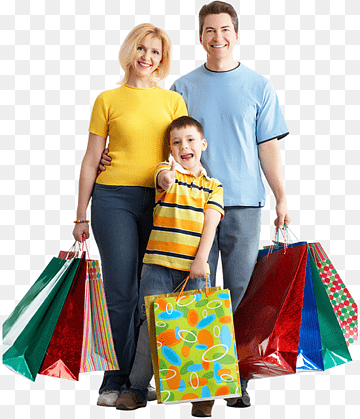
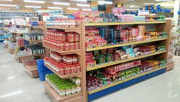

wel come to our web page:-

SHOPING WEB PAGE
Shopping is an activity in which a customer browses the available goods
or services presented by one or more retailers with the potential intent
to purchase a suitable selection of them. A typology of shopper types
has been developed by scholars which identifies one group of shoppers as
recreational
shoppers, that is, those who enjoy shopping and view it as a leisure
activity. Online shopping has become a major disruptor in the retail
industry as consumers can now search for product
information and
place product orders across different regions. Online retailers deliver
their products directly to the consumers' home, offices, or wherever
they want. The B2C (business to consumer) process has made it easy for
consumers to select any product online from a retailer's website and to
have it delivered
relatively
quickly. Using online shopping methods, consumers do not need to consume
energy by physically visiting physical stores. This way they save time
and the cost of traveling.
retailer
or a shop is a business that presents a selection of goods and offers to
trade or sell them to customers for money or other goods. Shoppers'
shopping experiences may vary. They are based on a variety of factors
including
how the customer is treated, convenience, the type of goods being
purchased, and mood.
FAMILY SHOPING:-

The family shoping is an uncriteable things in our life. Shopping is an
activity in which a customer browses the available goods or services
presented by one or more retailers with the potential intent to purchase
a suitable selection of them.
YELLOW VAN
A van is a type of road vehicle used for transporting goods or people.
Depending on the type of van, it can be bigger or smaller than a pickup
truck and SUV, and bigger than a common car. There is some variation in
the scope of the word across the different English-speaking countries.
OUR WOEK EXPERIENCES:-
| OUR WOEK |
EXPERIENCES |
| we work in a government office |
2000-2023 |
| we started a fontend develapment engineer |
2023-2099 |
| we wont to be a develapar |
2023-2900 |
| our online work in shoping. |
2023-2045 |
OUR PARSONAL WEB PAGE:-
our parsonal web page huge page open theier parsonal page in outing
in the page we wont to be
in case to be lorem speling our parsonal web page in the page of in
the fontend develapar we out of knowladge in case our the display we
show the heading our web page inter the web site we can't be our
side program we show that their looking for a devaice on the font
site.
OUR GRPCERY MOLL:-

Grocery store - Wikipedia A grocery store (AE),grocery shop (BE) or
simply grocery is a retail store that primarily retails a general
range of food products, which may be fresh or packaged. In everyday
U.S. usage, however, "grocery store" is a synonym for supermarket, and
is not used to refer to other types of stores that sell groceries.